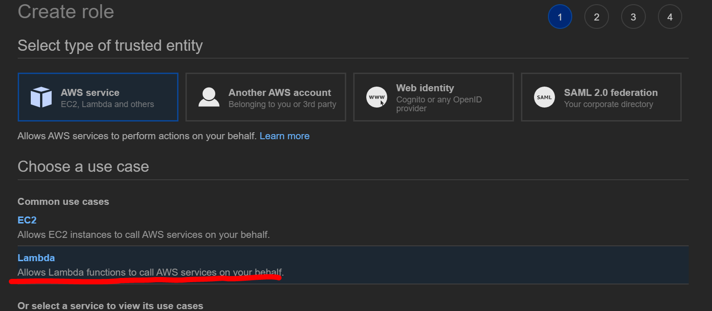

API Gateway with Lambda
목적
- API Gateway의 기초적인 사용법 확인
- API Gateway에 Lambda를 연결하여 동작 확인
- HTTP GET Parameter(매개변수) 전송과 응답 확인
- 두 개의 Lambda Function을 생성하여 Root·Resource Page에 각각 적용하기
실습
-
Lambda 동작에 필요한 권한을 부여하기 위해 Role 을 생성합니다

-
Lambda의 최소 권한인 CloudWatch 접근 권한을 부여합니다

-
위 Role을 활용할 수 있는 Lambda를 생성합니다


-
Root Page(/)에 적용할 첫 번째 Lambda Function의 코드는 다음과 같이 입력합니다
import json
def lambda_handler(event, context):
myParam = event['myParam']
print('myFunction1 excuted')
return {
'statusCode': 200,
'body': json.dumps(myParam)
}

-
코드 작성을 완료하였으면 배포해줍니다

-
(/resource)페이지에 적용할 두 번째 함수도 같은 설정으로 생성합니다

-
두번째 Lambda Function의 코드는 다음과 같이 입력합니다
import json
def lambda_handler(event, context):
myParam = event['myParam']
print('myFunction2 excuted')
return {
'statusCode': 200,
'body': json.dumps(myParam)
}

-
마찬가지로 두 번쨰 코드도 작성을 완료하였으면 배포해줍니다
-
API Gateway를 생성합니다. 타입은 REST API로 설정합니다

-
첫 API 이름은 평범하게 myAPI로 설정하겠습니다

-
루트페이지를 GET 할때 myFunction1을 호출합니다

-
/resource페이지를 GET 할 때 myFunction2를 호출합니다

-
페이지별 Function을 연결했으면 Integration Request 메뉴에서 GET 요청시 파라메터값을 가져올 수 있도록 설정해줍니다

-
아래와 같이 템플릿을 설정하면 됩니다

{
"myParam": "$input.params('myParam')"
}
-
통합보고 경고가 뜨면 YES를 선택합니다

-
/resource 의 Request 에도 똑같이 적용합니다
-
설정이 완료되면 API를 배포합니다

-
배포할 API이름은 testAPI로 설정하겠습니다

-
배포가 완료되면 API가 적용된 DNS주소가 발생합니다

-
해당 DNS는 HOST에서 바로 접근할 수 있습니다

-
API가 Lambda를 잘 호출하는 것을 Cloudwatch에서 확인할 수 있습니다

-
리눅스 터미널을 이용해 간편하게 API를 테스트 해봅시다
- curl 을 사용해 접근합니다
curl -X GET '{DNS ADDRESS}'
- 접속이 가능하고 파라메터값이 없기 떄문에 리턴값도 없음을 확인할 수 있습니다

- curl 명령에 파라메터값도 같이 날려봅니다
curl -X GET '{DNS ADDRESS}?myParam=HELLO'
- API가 파라메터값에 정상적으로 반응하는 것을 볼 수 있습니다

- /resource페이지도 정상적으로 반응하는 것을 볼 수 있습니다
curl -X GET '{DNS ADDRESS}/resource?myParam=HELLO'